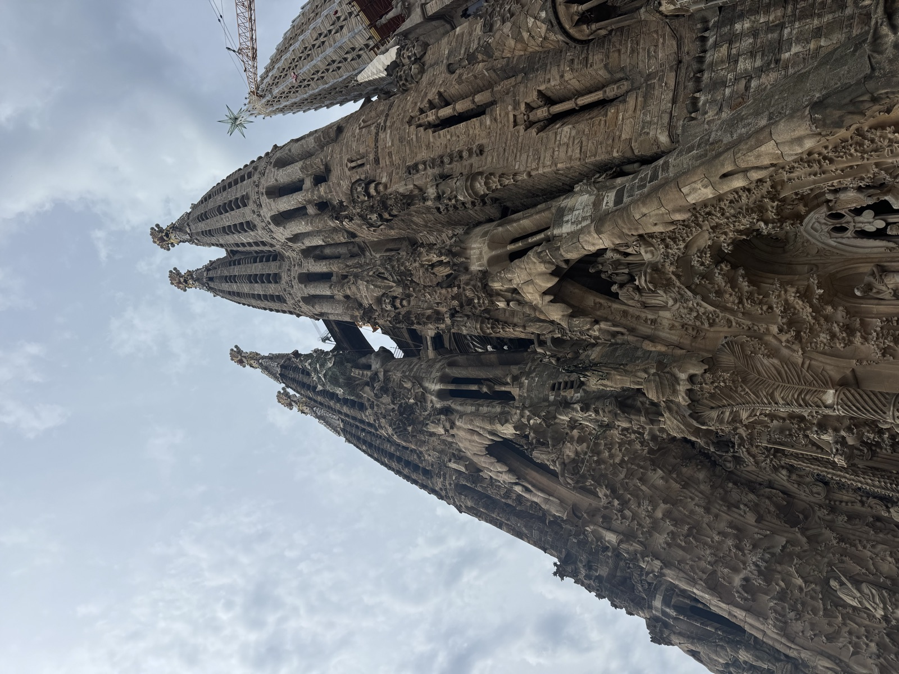
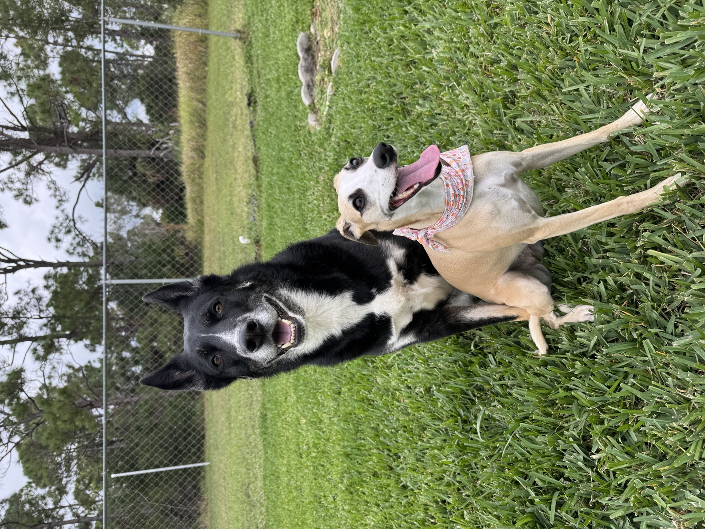
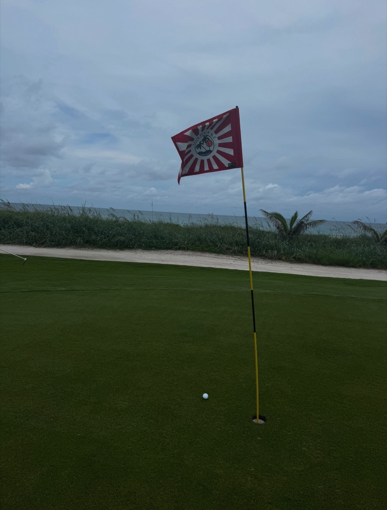
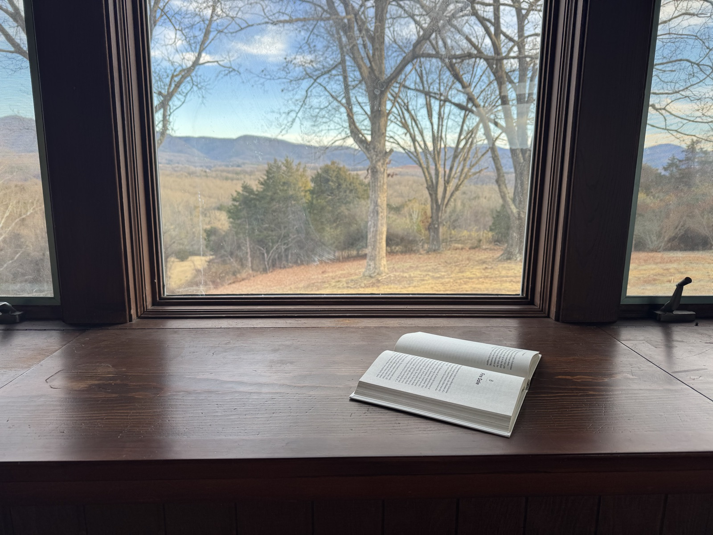

Outside of work
A little about me.
I run, read, travel, golf, follow Formula 1, and spend a lot of time with my dogs.




Professional experience and projects
Return homeOutside of work
I run, read, travel, golf, follow Formula 1, and spend a lot of time with my dogs.




Professional experience and projects
Return home